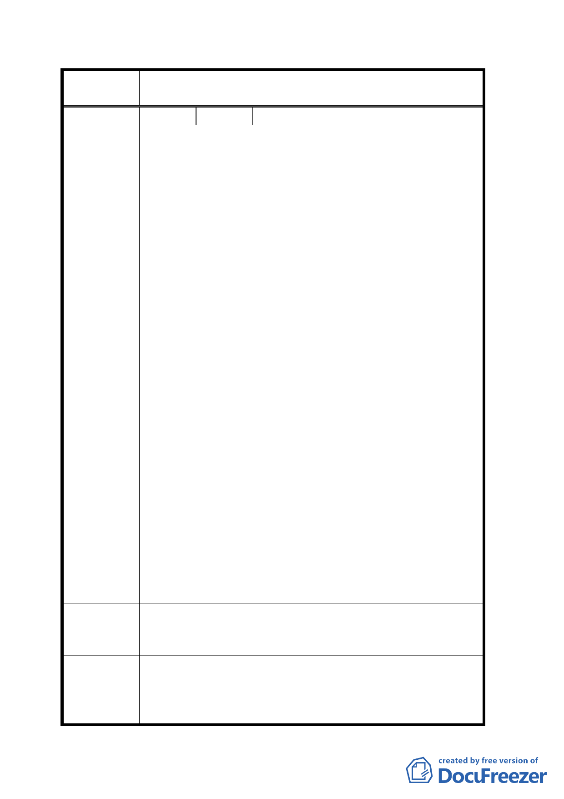

案
名
變更臺北市大同區孔廟西、北側部分道路用地、機
關用地及公園用地為廣場用地計畫案
編 號 １ 陳情人 林志堃
一、孔廟西側為大龍街，雖然只有百餘公尺，卻肩負著哈
密街 59 巷、45 巷、23 巷、敦煌路所有近千戶居民出
入的重要交通要道。目前施工中的哈密街四十四坎行
人徒步區又將完工，未來車輛又無法出入，孔廟西側
大龍街一旦改為廣場用地道路封閉後，數千保安里民
與重慶里民將面臨出門無路的窘境。再者，規劃中未
來大龍國小操場將興建地下停車場，其主要出入口亦
是大龍街，孔廟西側大龍街道路一旦封閉，未來地下
停車場一旦完工將面對出入難行的窘境，因此市政府
應對交通的衝擊再加以考量。
二、孔廟北側道路目前為哈密街 70 巷、68 巷、45 巷、23
巷、敦煌路所有居民（由敦煌路與承德路、庫倫街所
圍起之廣大區域）前往大龍市場、中山高速公路、重
陳情理由
慶北路等日常生活出入的重要交通要道。因為目前這
些居民由東往西只有兩條路可行：一是大龍國小與孔
廟間的孔廟北側道路，另一是繞道庫倫街。目前庫倫
街正在施工擴大人行步道工程，雖然仍維持原三線車
道，但路面寬度已縮減，該路段在上下班尖峰時段目
前已是壅塞難行，一旦路面縮減後交通將更加惡化，
如果孔廟北側道路封閉後，所有居民將必須再經由庫
倫街出入，交通勢必更加惡化，因此應更加三思。
三、蘭州派出所遷移後對保安里與重慶里的治安衝擊甚
大，市府應儘速籌謀新建位置。建議在明倫國小正對
面（哈密街 68 巷與承德路交叉路口）為原都市計畫消
防隊預定地，目前為荒廢空地，建議市政府將其作為
消防隊與蘭州派出所共構。因該處不但地處保安里與
重慶里之門戶，更是承德路出入台北市中心的樞紐，
非常適合設置派出所，希望市政府能加以考量。
一、孔廟西側道路用地不宜改為廣場用地。
建 議 辦 法 二、孔廟北側道路用地不宜改為廣場用地。
三、蘭州派出所可改建於明倫國小正對面。
一、本計畫廣場用地除緊急救災之需要外，不供車輛通行
委員會議決
之規定修正為「本計畫廣場用地採時段性交通管制方
議 式允許車輛通行」。
二、有關蘭州派出所遷移位置之建議係屬市府行政作業，
三○